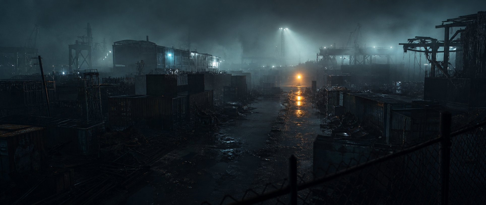
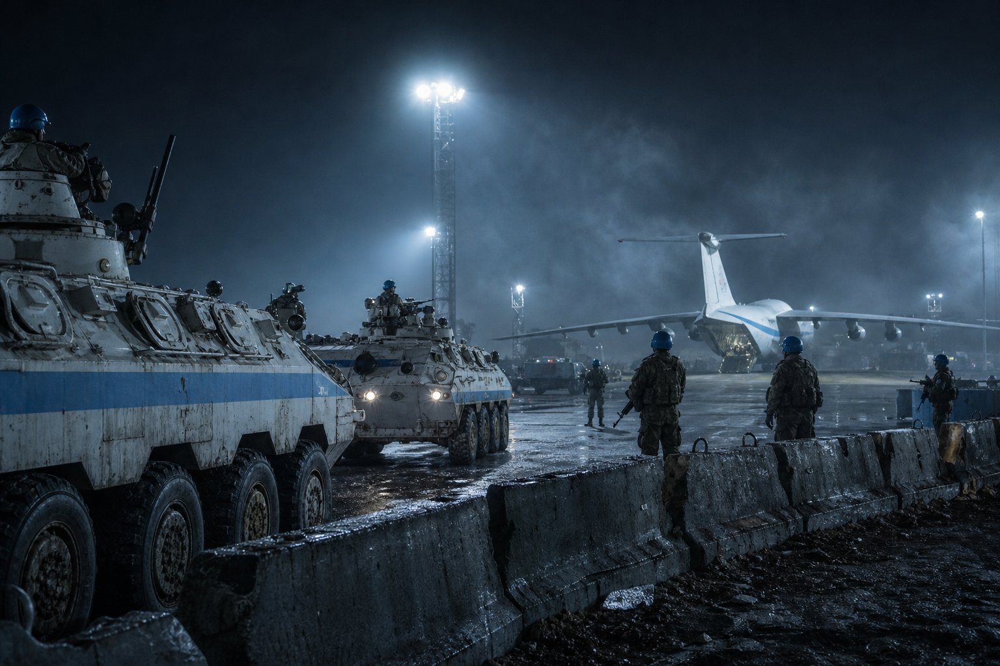

1. Qu’est-ce que la Dark Zone ?
La Dark Zone est le territoire de l’après-armistice : l’espace de Kamona où la guerre Nord-Sud n’a jamais vraiment cessé, mais où elle s’est transformée en conflit larvaire. Elle naît de l’intervention du Comité Sumek, qui met fin publiquement aux hostilités sans en résoudre les causes. Communautaire
- Statut juridique : aucune autorité kamonaise n’y est présente de façon effective.
- Acteurs : restes des armées du Nord et du Sud, PMC, organisations criminelles, et les entreprises militarisées privées.
- Économie : contrats à risque, contrebande, marché noir, course aux ressources.
- Règle : la seule loi qui y existe est économique — « seul ce que vous emportez hors de la Dark Zone vous appartient ». Officiel
2. Les trois modes de la Dark Zone
Le jeu traduit la Dark Zone par trois paliers de risque officiels. Ils ne sont pas des « zones » de la carte : ce sont des règles de raid appliquées aux mêmes cartes. Officiel
| Mode | Pression | Valeur du loot | Déblocage / frais | Pour qui ? |
|---|---|---|---|---|
| Normal | Faible | Contenants majoritairement faibles, rares très improbables | Libre | Débutants, remise en fonds, apprentissage des rotations |
| Lockdown | Élevée | Meilleure chance de trouver de la valeur, points premium | Niveau 12, ~100 000 K de valeur d’équipement, ~20 000 K de frais Rapporte | Joueur au-dessus du mode Normal, prêt à risquer |
| Forbidden | Maximale | Meilleur potentiel de récompense | Niveau 12, ~300 000 K de valeur d’équipement, ~50 000 K de frais Rapporte | Joueur qui mise tout sur l’extraction, chasseur de loot rouge |
Les seuils chiffrés ci-dessus proviennent de guides tiers et peuvent varier selon la carte et la version ; les limites de budget utilisées par notre Loadout Optimizer (950 K en Lockdown, 2 M en Forbidden) sont des estimations prudentes de la communauté. Rapporte
Normal, Lockdown, Forbidden : ce que vous achetez avec le risque
Le mode ne change pas votre loot, il change qui est dans la zone avec vous. En Normal, les PNJ et les joueurs sont faiblement équipés : un tir gratuit suffit. En Forbidden, chaque affrontement est un duel de budget. Le mode élevé est une taxe sur l’imprudent, pas sur le courage.
3. Les trois origines officielles du concept
Le concept de Dark Zone précède la version Infinite. La documentation officielle du premier jeu en donne la définition la plus nette. Officiel
Tac Ops
Vous jouez un Agent
Vous entrez en raid en tant qu’Agent. Vous préparez vous-même vos armes, votre équipement et vos supplies dans l’entrepôt, puis vous entrez dans la Dark Zone. Vous cherchez des supplies sur le terrain, atteignez un point d’extraction dans le temps imparti, et conservez tout ce que vous avez trouvé si vous y parvenez.
Covert Ops
Vous jouez un Rogue
Vous entrez en tant que Rogue, avec des armes, un équipement et des supplies attribués aléatoirement. Vous n’avez pas la maîtrise de votre build : la Dark Zone décide de votre dotation. C’est le mode le plus proche de la survie nue et le plus narrativement intéressant.
Les pionniers
Dark Zone Pioneers
Les « Dark Zone Pioneers » peuvent être déguisés en Rogues. Autrement dit, un joueur qui vous donne l’impression d’être une cible sans défense peut être un PMC de son côté, et l’inverse est vrai. C’est le premier niveau de « mise en abyme » du jeu.
Cette tripartition vient de la présentation officielle du jeu mobile de 2022 ; elle a été simplifiée en version PC/mobile Infinite, mais la logique « Agents / Rogues » reste la matrice de tous les modes. Rapporte
4. Les nœuds de la Dark Zone
La Dark Zone n’est pas uniforme : chaque carte est un noeud dominé par une faction, avec ses propres règles de loot. Connaître le nœud, c’est déjà savoir à qui vous avez affaire. Communautaire
| Noeud | Carte | Faction dominante | Boss | Signature | Risque |
|---|---|---|---|---|---|
| Station de diffusion | TV Station | Successions (White Wolves, puis Comité Sumek) | Kurt, Rolf, Bernard | Laboratoire secret, ascenseur du 2e étage, système d’inondation au gaz | Très élevé |
| Dépôt de Marulos | Armory | Kamona Liberation Army | Renoir | Arsenal de haut niveau, bunker sud, gardes nombreux | Très élevé |
| Axe de ravitaillement | Farm | Alternance Ajax / Hecate | Ajax, Hecate | Échanges de contrôle, grenades-leurre, colonne de Hecate | Élevé |
| Ligne de crête | Northridge | Indépendants / Abyss Squad | Fred Lee | Longue portée, escorte namesake, neige et météo | Élevé |
| Hub aérien de Guoyapos | Airport | Base avancée de MNST | Ambush White Wolves / Blackgold | Meilleur budget d’entrée, coffres multiples, zone infectée en S7 | Très élevé |
| Vallée des Court's | Valley | Famille Antonio / Mad Dogs | Doss Antonio | Or, coffres, marchands, escorte privée de Doss | Moyen |
| Terrasse minière | Mine | Mad Dogs (Porrero) | Porrero Kazan | Prison, casque explosif, éclats d’Utopia | Très élevé |
| Zone portuaire | Port / events | Mutins du Polaris | Derwin Pan | Alerte sonore, marché noir, contrôle des routes | Moyen |
| Terres mortes | No Man’s Land | Indéterminée | Aucun | Zone de reconnaissance, ni faction ni loot premium | Moyen |
5. Le Comité Sumek sur le terrain

Le Comité Sumek intervient avec des unités de maintien de l’ordre, protectrices de convois d’aide humanitaire, et lance l’Operation Peacemaker pour couvrir ces vols face aux batteries antiaériennes. Mais l’Operation Blackout montre son angle mort : ses propres équipes mixtes se trahissent, et l’avion qu’il envoie ne transportait pas de l’aide mais des échantillons d’Utopia. Communautaire
- Alpha Team (Colom SAS) et Bravo Team (membres de l’Abyss Squad) agissent sous mandat conjoint.
- La Bravo Team redirige la dernière batterie antiaérienne vers l’avion du Comité.
- Conséquence politique : le Comité soupçonne le Sud, mais l’absence d’extraction d’Alpha empêche toute attribution — et Renoir Brady est accusé.
La question centrale de la Dark Zone tient en une phrase : qui contrôle les échantillons d’Utopia ? Ni le Nord, ni le Sud, ni le Comité n’ont d’intérêt à ce que la vérité remonte. Théorie
6. Utopia : la nouvelle couche de la Dark Zone
La Saison 7 ajoute une dimension physique à la Dark Zone : l’Infected Zone. L’officialisation de la fuite du réactif Utopia transforme des zones auparavant sûres en terrain contaminé. Officiel
| Élément | Effet en jeu | Lecture lore |
|---|---|---|
| Farm | Heavy Infected Zone | Contamination la plus dense : le site est proche des infrastructures |
| Valley | Infected Zone standard | Anomalies et phénomènes étranges : la « Night Owl Detective Agency » y enquête |
| Airport | Heavy Infected + Zombie Endless | Base avancée de MNST : le lieu où l’infrastructure s’est superposée à l’infection |
| Elysium | Loot rouge de valeur égale à Utopia, en zone infectée | Utopia n’est pas un objet unique mais une classe de matériel bio-technologique |
| Zombie Research | Progression dédiée | Le recherche sur le réactif se poursuit, y compris sous contrôle humain |
La liaison entre l’outbreak et les installations situées sous la TV Station est celle que le studio a lui-même mise en avant. C’est le fil qui relie le lore de la saison 7 à l’histoire de l’archipel — et c’est pourquoi la TV Station reste le point le plus important de la carte en S7. Officiel
7. Les lois non écrites de la Dark Zone
Au-delà des modes et des cartes, la Dark Zone impose un code de conduite que la communauté a stabilisé et que les meilleures équipes appliquent. Communautaire
- Le bruit est une signature. Chaque tir, chaque course, chaque porte forcée est un Coordinates. Dans la TV Station, le silence est votre meilleure arme.
- La valeur transportée est un Permissions. Le bandit qui vous arrête ne veut pas vos armes : il veut votre butin. Plus vous transportez, plus vous valent une embuscade.
- Le temps est une ressource. Les extractions ferment, les lignes d’IA se rechargent, et le chronomètre de raid se termine pour tout le monde. « Le timing d’extraction » est la compétence reine. Voir les stratégies S7.
- Le rat run fonctionne encore. Entrer léger, lire les combats, récupérer l’équipement des morts, extraire : c’est le rapport rendement/risque le plus élevé du jeu. Technique du rat.
- La faction adverse n’est pas votre ennemi. Dans la Dark Zone, un boss de PMC, un joueur et un PNJ sont trois types de danger différents. Le boss peut être votre allié de fait s’il est lui-même ciblé.
L’erreur la plus fréquente
Confondre la Dark Zone (le lieu du lore) avec le mode de jeu le plus difficile. La Dark Zone est partout. Un run en Normal sur la TV Station est déjà un run en Dark Zone. Le risque vient de vos adversaires, pas du nom de votre mode.
8. Implications pratiques
| Signal du lore | Ce qu’il faut faire | Équipement associé |
|---|---|---|
| Un site est un nœud de faction | Éviter l’axe du boss : il couvre l’accès au loot | Grenades, casque audio, deux charges |
| Le site est un point de contrôle d’armistice | Traiter chaque porte comme une embuscade possible ; ne jamais s’y arrêter | Énergie, sprint court, grenades |
| Le site est un marché noir | Prioriser coffres, clés et marchands ; fights inutiles | Budget moyen, pas de full kit |
| La zone est infectée | Masque, gestion des groupes, sortie rapide | Elysium en cible prioritaire |
| Le boss est un chef de clan | Son escorte porte un nom de famille : un seul kill peut en effondrer plusieurs | Munitions de pénétration, viseur |
Les éléments en caractères non latins de ce tableau ont été corrigés ; la version published est entièrement en français. Officiel
9. Ce qui reste inexpliqué dans la Dark Zone
Qui possède les échantillons d’Utopia ?
Après l’Operation Blackout, Colom et Tevilla proposent des sommes considérables pour récupérer les échantillons de la Mine. Aucune faction ne les contrôle officiellement. Communautaire
Qui parle à la radio à Hecate ?
Une voix anonyme lui dit de ne pas partir et lui promet que « le camp de garde vous traitera bien ». L’identité n’a jamais été révélée, et Hecate reste sur la ferme malgré sa mission. Rapporte
Que se passe-t-il à la TV Station après Sumek ?
Le Comité réquisitionne la station « pour des raisons non déclarées ». Depuis, le complexe est le point le plus dense de la Dark Zone — et le point le plus silencieux en termes d’explications officielles. Communautaire
Où est le laboratoire de l’Ark ?
Si les installations sous la TV Station abritaient un programme de recherche, qui y travaille aujourd’hui ? Les hypothèses de la communauté tournent autour de la corporation Toland et d’une unité d’élimination, mais rien n’est confirmé. Théorie
Que vaut réellement le Secret Document ?
Un document confidentiel rouge circule en raid. Sa valeur marchande et sa fonction exacte ne sont pas documentées par l’éditeur : les prix de marché restent très dispersés. Théorie
10. Sources
Officiel
- Textes de mission in-game — « Abundant Profit », « Smooth Extraction », « Send Signal », « Sanctuary Recon », « Signal Interference », « Road to Riches » : les citations de la Dark Zone les plus directes. arenabreakout-infinite.com (nouvel onglet)
- Description officielle Arena Breakout (2022) — Tac Ops, Covert Ops, Agents et Rogues, Dark Zone Pioneers. arenabreakout.com (nouvel onglet)
- Annonce de la Saison 7 : Utopia — infection de Farm, Valley et Airport, origine et responsable du réactif non expliqués. idcgames.com (nouvel onglet)
- Notes de mise à jour ABI (Steam) — modes Normal / Lockdown / Forbidden, Enter the Dark Zone, conditions d’entrée par carte, S4 « Dusk to Dawn », S6 « White Nights ». steamcommunity.com (nouvel onglet)
- S7 UTOPIA Arrives with Massive Rewards — Elysium comme loot rouge de valeur égale à Utopia, en zone infectée. senseos.gg (nouvel onglet)
Communautaire
- Arena Breakout Wiki (Fandom) — origine et limites de la Dark Zone, lien avec l’Operation Blackout. arena-breakout.fandom.com (nouvel onglet)
- Grokipedia — Kamona — Dark Zone et croissance des PMC. grokipedia.com (nouvel onglet)
- topuplist.com — comparatif Normal / Lockdown / Forbidden, seuils de déblocage et frais d’entrée. topuplist.com (nouvel onglet)
- Reddit r/ArenaBreakoutInfinite — fils sur la Dark Zone, les factions et les « archives » ; la terminologie « dark zone » est d’ailleurs souvent employée par la communauté pour désigner le jeu à haut risque en général, et pas uniquement un mode nommé.
- senseos.gg — boss et modes, dont l’Infected Zone et le Zombie Endless. senseos.gg (nouvel onglet)
Théories (non confirmées)
- Le réseau Toland, l’« Ark », les « Cleaners » et la figure d’« Arachne » : jamais mentionnés dans une communication officielle.
- La valeur exacte du Secret Document et sa fonction narrative : discussions communautaires uniquement.
- Les seuils chiffrés de déblocage Lockdown / Forbidden varient selon les guides : à traiter comme des ordres de grandeur, pas comme des valeurs officielles. Rapporte
Lire l’histoire complète de Kamona · Le dossier des factions et des personnages